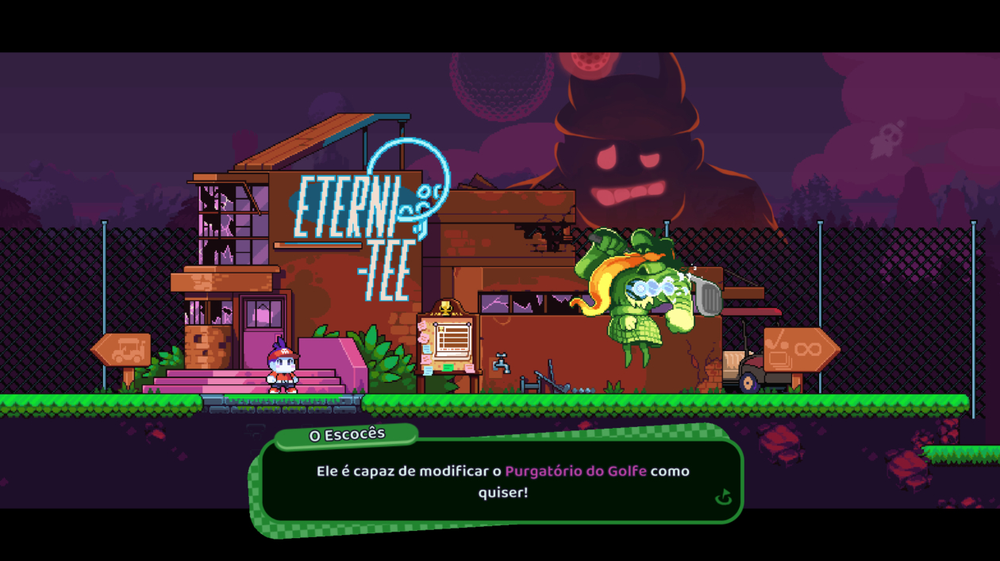
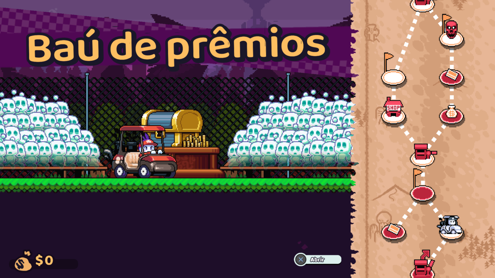
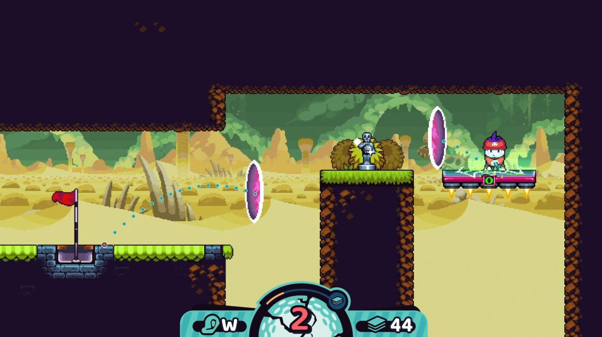

Se tem uma coisa incrível na cena independente de jogos é a liberdade e criatividade na mistura estilos e elementos na criação de “jogos quimera” e muitos tendem a ser bons demais — aquele tipo de aposta que as grandes produtoras já não ousam arriscar. Nesse quesito, a produtora japonesa Chuhai Labs, antes conhecida como Vitei Backroom, deu uma tacada de mestre com Cursed to Golf, um jogo simplesmente fantástico!
Purgatório do “Golf-like”
Mesmo não sendo um fã de jogos de esporte, não nego que caí de amores na primeira partida por este jogo que é, fácil, uma das propostas mais legais e criativas de 2022: é um jogo de golfe (dã!), com uma dinâmica de plataforma e ação (visão lateral), física no controle da bola, subversão das regras do esporte e uma historinha divertida. Tudo junto e misturado com o gênero roguelite. Você controla um jogador obcecado, prestes a se consagrar uma lenda do golfe, mas na última tacada… BUM!, cai um raio no seu taco e vai pro beleléu! Na verdade sua alma cai no “purgatório do golfe”, onde é abordado pelo excêntrico Escocês, um jogador que está preso neste local há séculos. Ele explica que é possível voltar à vida caso vença os 18 buracos do purgatório, um tarefa quase impossível já que O Vigia está sempre de olho em você.
A trama é simples, mas fica interessante já que você vai querer descobrir a verdade por trás da sua morte que não aconteceu exatamente por obra do acaso. Por trás da estética super charmosa, da trilha sonora chiptune espetacular e sua mecânica simples e gostosinha, Cursed to Golf surpreende. É um jogo que testa sua perspicácia e exige muita estratégia.
O campeão dos campeões
São apenas 18 fases, cada uma com trajetos intrincados bem únicos, repleto de obstáculos e situações que só tendem a piorar. O nível de dificuldade é uma montanha-russa de emoções, onde ora você vibra se achando o gênio da matemática com tacadas mirabolantes, ora fica pensando “vá à m%$#@, sap#&$@ é impossível!“ em frases compostas dos mais variados impropérios e, talvez, até sinta aquela vontadinha de tacar o controle na parede. Basicamente cada fase tem sua dificuldade definida de acordo com a complexidade do terreno e muitas vezes parece que o jogo quer chocar você com isso. Pelo menos ele é bastante didático e bem divertido enquanto apresenta suas mecânicas e regras, então não pule o tutorial ou vai se arrepender.
São apenas três tipos de taco para alternar durante o jogo todo: DRIVER (manda a bola longe), IRON (tacadas de distância e altura mediana) e WEDGE (tacadas curtas e altas). Alguns terrenos da fase possuem armadilhas naturais como areia e grama alta. Se a bola cair nesses lugares, apenas tacos específicos são utilizados para sair, mas também existem zonas de perigo como água e espinhos (e outras mais) que te fazem perder a bola e gastar uma tacada à toa — e se a bola for destruída, há uma penalidade extra. Ao definir o taco, é preciso ajustar a força. Nesse momento uma barrinha fica enchendo e esvaziando, o que é meio chato, e basta apertar o botão na medida desejada. Se errar, pode cancelar e tentar de novo. Depois é preciso definir distância/altura da tacada se orientando pela linha guia que se move constantemente mostrando o trajeto da bola. Embora não pareça, essa sequência de ações fica bastante natural. Você sempre começa uma fase com cinco tacadas disponíveis, mas pode obter algumas mais para continua ao destruir Estatuetas de Prata (vale +2 tacadas) ou de Ouro (vale +4 tacadas) espalhadas pela fase. Também pode usar cartas de suporte para ganhar tacadas instantaneamente. Mas atenção: caso zere suas tacadas na partida, você perde. E sempre que perder, tem de começar tudo de novo… lá da primeira fase. Eu tinha citado a palavra “roguelite” antes, né? As cartas adicionam efeitos na bola e até dão meios para cortar caminho e burlar regras, por isso não fique segurando cartas, use-as sempre que puder, mas com sabedoria. As cartas são coletadas gratuitamente (de forma aleatória) em baús nas rotas do minimapa e compradas nas lojas Eterni-Tee — o dinheiro é obtido em baús e vencendo as fases, mas neste último caso há um bônus que depende de da quantidade de tacadas, quanto menos usar até completar o buraco, melhor.
Mas existem duas pegadinhas: as rotas do minimapa com baús pelo caminho sempre levam a uma fase amaldiçoada. A tal “maldição” é um efeito aleatório para atrapalhar como vento, chuva, bola pesada, tela virar de ponta cabeça, desorientação etc., coisas que duram alguns turnos. Além disso, o preço das cartas nas lojas vão de “caramba, tá caro” à “inflação galopante” conforme avançar nos territórios do jogo. Dentro das lojas é possível trocar as cores da sua roupa (são muitas!) e até guardar cartas no fichário. Ao guardar cartas, caso perca a partida, você pode recomeçar e usar as cartas desde o início. As 18 fases são separadas em quatro territórios e cada um dá acesso a alguns tipos específicas como broca, foguete teleguiado, fogo, gelo, atravessar qualquer obstáculo físico e até usar portais para encurtar caminhos.